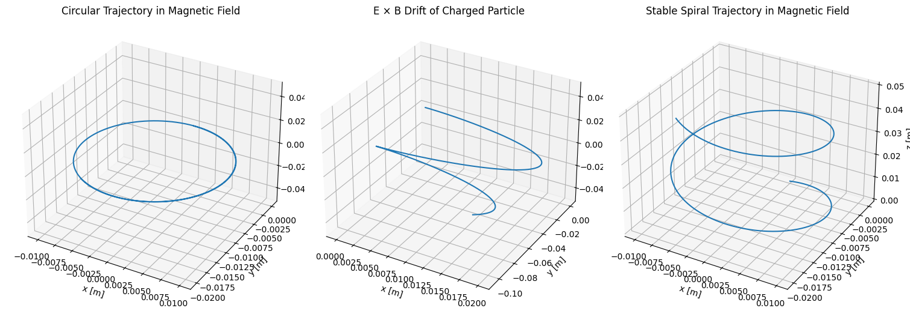

Problem 1
Simulating Particle Motion Under the Lorentz Force
Motivation
The Lorentz force
\[
\vec{F} = q(\vec{E} + \vec{v} \times \vec{B})
\]
governs the dynamics of charged particles in electromagnetic fields. It underpins technologies such as:
- Particle accelerators: where magnetic and electric fields steer and accelerate particles.
- Mass spectrometers: using curved trajectories in magnetic fields to separate ions by mass-to-charge ratio.
- Plasma confinement systems: like tokamaks, which use magnetic fields to confine high-temperature plasmas.
1. Exploration of Applications
Key Systems Using the Lorentz Force
| System | Role of Lorentz Force |
|---|---|
| Cyclotron | Magnetic fields induce circular motion; electric fields accelerate particles. |
| Mass Spectrometer | Charged ions deflect differently based on their mass/charge ratio. |
| Tokamak (Fusion Reactor) | Magnetic fields guide and confine hot plasma. |
| Cathode Ray Tube (CRT) | Electric and magnetic fields steer electrons to specific screen positions. |
Role of Electric and Magnetic Fields
- Electric Fields (\(\vec{E}\)): Accelerate charged particles in straight lines.
- Magnetic Fields (\(\vec{B}\)): Cause particles to move in circular or helical paths due to the \(\vec{v} \times \vec{B}\) force.
- Crossed Fields: Can create drift motions, such as E × B drift.
2. Simulating Particle Motion
We’ll use Euler’s method for simplicity, though Runge-Kutta is better for accuracy.
Python Implementation
import numpy as np
import matplotlib.pyplot as plt
from mpl_toolkits.mplot3d import Axes3D
# Lorentz force calculation
def lorentz_force(q, v, E, B):
return q * (E + np.cross(v, B))
# Particle motion simulation using Euler's method
def simulate_particle_motion(q, m, E, B, v0, r0, dt=1e-6, steps=10000):
r = np.zeros((steps, 3))
v = np.zeros((steps, 3))
r[0], v[0] = r0, v0
for i in range(1, steps):
F = lorentz_force(q, v[i-1], E, B)
a = F / m
v[i] = v[i-1] + a * dt
r[i] = r[i-1] + v[i] * dt
return r
# Common parameters
q = 1.0 # Coulombs
m = 0.001 # kg
# Scenario A: Circular motion in magnetic field
E_a = np.array([0.0, 0.0, 0.0])
B_a = np.array([0.0, 0.0, 1.0])
v0_a = np.array([10.0, 0.0, 0.0])
r0_a = np.array([0.0, 0.0, 0.0])
r_a = simulate_particle_motion(q, m, E_a, B_a, v0_a, r0_a)
# Scenario B: E x B drift
E_b = np.array([10.0, 0.0, 0.0])
B_b = np.array([0.0, 0.0, 1.0])
v0_b = np.array([0.0, 0.0, 0.0])
r0_b = np.array([0.0, 0.0, 0.0])
r_b = simulate_particle_motion(q, m, E_b, B_b, v0_b, r0_b)
# Scenario C: Helical motion in magnetic field
E_c = np.array([0.0, 0.0, 0.0])
B_c = np.array([0.0, 0.0, 1.0])
v0_c = np.array([10.0, 0.0, 5.0])
r0_c = np.array([0.0, 0.0, 0.0])
r_c = simulate_particle_motion(q, m, E_c, B_c, v0_c, r0_c)
# Plotting all 3 scenarios
fig = plt.figure(figsize=(15, 10))
# Circular motion
ax1 = fig.add_subplot(131, projection='3d')
ax1.plot(r_a[:, 0], r_a[:, 1], r_a[:, 2])
ax1.set_title("Circular Trajectory in Magnetic Field")
ax1.set_xlabel("x [m]")
ax1.set_ylabel("y [m]")
ax1.set_zlabel("z [m]")
# E x B drift
ax2 = fig.add_subplot(132, projection='3d')
ax2.plot(r_b[:, 0], r_b[:, 1], r_b[:, 2])
ax2.set_title("E × B Drift of Charged Particle")
ax2.set_xlabel("x [m]")
ax2.set_ylabel("y [m]")
ax2.set_zlabel("z [m]")
# Spiral motion
ax3 = fig.add_subplot(133, projection='3d')
ax3.plot(r_c[:, 0], r_c[:, 1], r_c[:, 2])
ax3.set_title("Stable Spiral Trajectory in Magnetic Field")
ax3.set_xlabel("x [m]")
ax3.set_ylabel("y [m]")
ax3.set_zlabel("z [m]")
plt.tight_layout()
plt.show()
3. Parameter Exploration and Motion Types
Physical Constants
q = 1.0 # 1 Coulomb
m = 0.001 # 1 gram = 0.001 kg
Example: Circular Motion in a Uniform Magnetic Field
B = np.array([0, 0, 1])
E = np.array([0, 0, 0])
v0 = np.array([10.0, 0, 0])
r0 = np.array([0, 0, 0])
r, v = simulate_particle(q, m, E, B, v0, r0)
plt.figure()
plt.plot(r[:, 0], r[:, 1])
plt.title("Circular Motion (Uniform Magnetic Field)")
plt.xlabel("x [m]")
plt.ylabel("y [m]")
plt.axis('equal')
plt.grid()
plt.show()
Helical Motion (Spiral in z-direction)
v0 = np.array([10.0, 0, 5.0])
r, v = simulate_particle(q, m, E, B, v0, r0)
fig = plt.figure()
ax = fig.add_subplot(111, projection='3d')
ax.plot(r[:, 0], r[:, 1], r[:, 2])
ax.set_title("Helical Motion (z-direction spiral)")
plt.show()
Crossed E and B Fields (Interesting Drift Trajectory)
E = np.array([10.0, 0, 0])
B = np.array([0, 0, 1.0])
v0 = np.array([0, 0, 0])
r, v = simulate_particle(q, m, E, B, v0, r0)
plt.figure()
plt.plot(r[:, 0], r[:, 1])
plt.title("E × B Drift Motion")
plt.xlabel("x [m]")
plt.ylabel("y [m]")
plt.axis('equal')
plt.grid()
plt.show()

4. Visualizing and Interpreting Results
- Larmor Radius:
$$ r_L = \frac{mv_{\perp}}{qB} $$
where \(v_\perp\) is the velocity component perpendicular to \(\vec{B}\).
- Drift Velocity:
$$ \vec{v}_d = \frac{\vec{E} \times \vec{B}}{B^2} $$
Summary of Observed Motions
| Scenario | Motion Type | Notable Features |
|---|---|---|
| Uniform \(\vec{B}\), no \(\vec{E}\) | Circle | Larmor radius from speed, B |
| Uniform \(\vec{B}\), \(v_z \neq 0\) | Helix | Constant z-velocity, circular xy-plane |
| \(\vec{E} \perp \vec{B}\) | Drift | Straight drift in \(\vec{E} \times \vec{B}\) direction |
5. Real-World Implications
| Application | Observed Effect | Simulation Parallel |
|---|---|---|
| Cyclotron | Circular motion with increasing energy | Uniform B with perpendicular E |
| Tokamak | Charged particle spiraling around field lines | Helical motion |
| Mass Spectrometer | Radius depends on m/q | Larmor radius relation |
6. Extensions and Further Exploration
- Non-uniform fields: Vary \(B(x, y, z)\) and \(E(x, y, z)\).
- Runge-Kutta methods: More accurate integration for high-energy or long-duration simulations.
- Relativistic effects: Include Lorentz factor for very high speeds.
- Particle interactions: Simulate plasma behavior by adding Coulomb forces.
Conclusion
This simulation demonstrates how the Lorentz force governs charged particle trajectories in electromagnetic fields. The simple case of a 1 C charge and 1 g mass illustrates:
- Perfect circular motion in magnetic fields.
- Helical motion when there's a velocity component along \(\vec{B}\).
- Drift in crossed fields showing real phenomena like E × B drift.